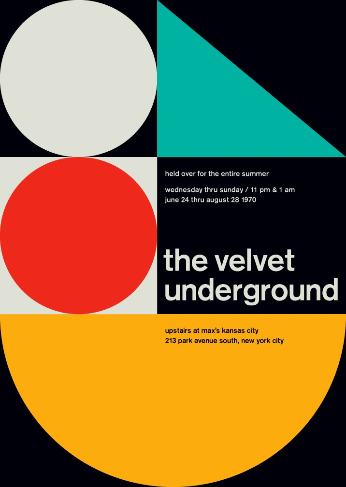
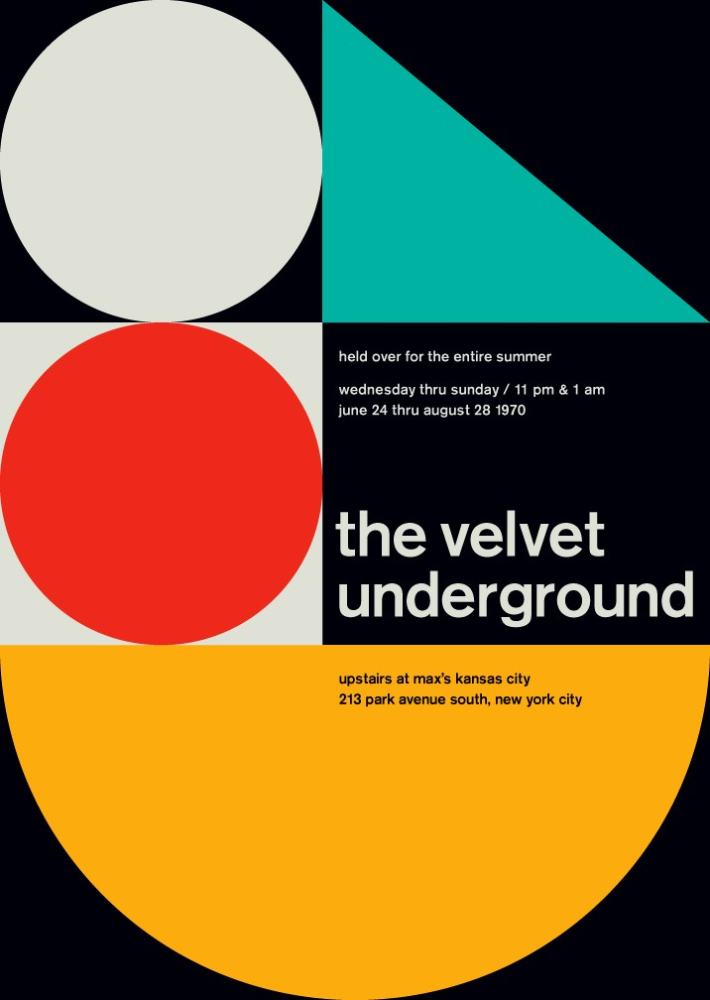

Wolfgang Weingart
The Father of New Wave typography
New wave typography was pioneered towards the closing end of the twentieth century. The experimental and expressionistic approach to design graced the public with a new postmodern age of creativity. This essay will explore what New wave typography is and where it came from. It will also examine the person responsible for pioneering an age of expressionism in the world of typography.
The Origins of New Wave typography
New Wave typography emerged in the 1970s and was an innovative departure from the international typographic style or more commonly known as Swiss-style. Swiss style had become an internationally accepted design approach. An example of a regular swiss style design would be utilising a strict grid and use of sans serif typography, for example the typeface Helvetica. New Wave typography, however, abandoned the mathematical grid used to capture a sharp strict form typically examined with a modern corporate feel. New Wave typography consisted of highly cutting-edge pieces containing unpredictable spacing of different letters with shifting type weights. This style of working with type was new and left designers curious about this new “Swiss punk style”.
 

Weingart – Early Career
New Wave typography emerged in the early 1970s from designer Wolfgang Weingart. Weingart studied graphics at the visited the Merz Academy for Art in Stuttgart. Weingart has stated that challenging himself with a three-year apprenticeship in Stuttgart had a monumental influence on his future work. During this period, Weingart met a man named Karl August-Hanke who became an advisor for the young designer. Hanke inspired him to go to Switzerland to study as he knew the environment would enable new and inventive possibilities for Weingart’s talents to flourish and prosper. In 1963, Weingart arrived in Basel on the 22nd of March 1963 and during this time, he met Armin Hofmann and Karl Gerstner. Hofmann and Emil Ruder, who were both teaching at the Basel school were seeking to establish a new advanced graphic design program for postgraduates. In 1968, Hofmann invited Weingart to teach on this new program.
Method
In his teaching Weingart was trying new concepts such as producing interwoven geometric compositions motivated by ancient stone construction found in the Middle East. (Burton, Pg. 1) After some time, these classes simply became glorified workshops were Weingart and his students would strive to test and enlarge pieces and models for unique and original typography.
An early piece of Weingart’s work in 1962 shows off an experimental typographic poster. The poster showcases a detailed collage of letters crashing into one another, displaying an early taste of Weingart’s signature style. Weingart was trying to present a radical approach to Swiss style on this piece by laying the foundations of a typical swiss style poster and turning it on its head by cutting, shaping and styling the type to present a whole new concept. Weingart successfully achieves what he’s trying to convey to his audience because he knew this style of typography had never been done before. Creating a poster of this style and at this time period not only shows how ahead of its time it was but shows how courageous Weingart as a person is. No one before had seen typographic posters been produced like this and was very risky for Weingart’s career as a designer and educator.
The second piece is Typographic Process, Nr 5. Typography from 1974 designed again by Weingart. He used a lithographic process to create this piece and exhibits Weingart’s New Wave style showing off diagonal type, weight changes between words and a mix of different typefaces. This was a bold new step in a different direction when it came to typography as it displayed Weingart’s talents of breaking the strict rules Swiss Style set out to begin with. Weingart was attempting to create a bigger picture within the realm of typography and stand out from the rest. Weingart successfully achieves what he’s trying to convey to his audience because the poster is both complex and chaotic in design but presents itself in a very strict and sharp structure. These various ideas are being melded together to present Weingart’s creative vision come to life.
It could be argued Weingart’s method of teaching was unorthodox, however, Weingart’s approach would never have been so successful if not for the way he educated his students. During this successful period for Weingart, all these exuberant and expressive designs were beginning to brew his visual language. (Reword) Weingart exclaims in an interview “Accelerated by the social unrest of our generation, the force behind Swiss Typography and its philosophy of reduction was losing its international hold. My students were inspired, we were on to something different, and we knew it.” (Phillip Burton, September 2, 2013, Pg. 1)
Weingart never attempted to sit his class down and teach them the traditional standard way. Instead, he stood them up and proposed that they simply just create. (Burton, Pg. 1) The students themselves were heavily impacted from Weingart’s teachings. Terry Irwin, one of Weingart’s former students explains “You’d have multiple sketches laid out on your table, and you were trying something here, and then you were moving it around here,” (Phillip Burton, September 2, 2013, Pg. 1) she explains. “He would come around and tell you the impression it was giving, so you were trying to figure out what that meant. And you’d move it around a little more—probably still confused—and he’d come around and say, ‘Yes, better.’ And then he’d leave. And you’d be trying to figure out why it was better. But you came to understand ‘why’ yourself through these comments....It was an incredibly impactful way to learn.” (Phillip Burton, September 2, 2013, Pg. 1) With the methods of teaching at Basel and the forward-thinking designs being created, Weingart was pioneering a new wave of typography and was starting to be seen as “the father of new wave typography”.
Criticism
Most of the negative criticism Weingart received during that period of creative outflow he was having was due to the public not allowing these experimental designs to sit with them. Society in a way simply took one glance at a piece of Weingart’s work and instantaneously dismissed it for being too weird and radical. However, not all criticism at first was harsh and unfair.
During this time, many different designers started to imitate and copy Wolfgang’s work and used it as a basis to start from and start a progressively bolder thinking concept. Weingart himself was originally annoyed and irked that designers other than himself were attempting to follow in his footsteps. If Weingart didn’t have people recreating and echoing his work, he would have never taken that next step which rose him to a completely new level of thinking for new and intelligent designs. This was because Weingart forced himself to look for new ideas so he could stay one step ahead from the curb and to challenge every other designer that was replicating his work.
He did this by adopting different approaches to design and using particular processes like lithographic and hand foil to shape new and inventive typographic designs. To push the boundary even further, Weingart incorporated film and camera techniques into his typography work to give it a sense of independent freedom to flourish. Weingart successfully fused elements of film manipulation like using the process camera to visually enhance the look and shape of the type by stretching it and cutting it however he wanted.
One of Weingart’s pieces that show this type of process is the 1983, The Swiss Poster Birkhauser Publishers Basel – Boston. Weingart used forward thinking techniques like crumpling up pieces of tissue paper and photocopying them to create distinct shapes and textures to pull off the look of this extravagant poster. It presents a bold symbolic look to Switzerland as those photocopied images of crumpled up tissues were used to shape and design the Matterhorn mountain and clouds around it. Weingart uses a process of photo montage to overlap images to create a beautiful array of colours and shapes that display an experimental approach to the swiss style typographic design.
Conclusion
To conclude, Wolfgang Weingart is the father of new wave typography is complex yet simple to explain, a young tenacious innovator was chosen to be thrown into the deep end teaching at a prestigious art school. Always bored with modern swiss style, that teacher changed the way of looking at swiss style typography through his own creativity and freedom. I believe Wolfgang Weingart, at the school of Basel, emerged an idea of experimenting with the way we look at traditional typography itself and pioneered a completely new style. Thus, became the father of new wave typography.